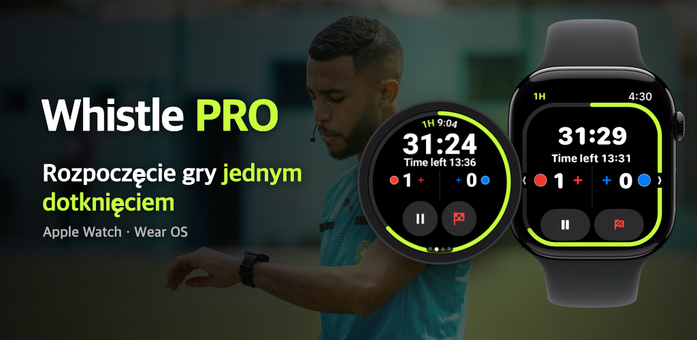

Whistle PRO
Załóż zegarek i wyjdź na boisko.
Stoper i notatnik meczowy na Apple Watch i Wear OS, stworzony dla sędziów piłkarskich.

Załóż zegarek i wyjdź na boisko.
Stoper i notatnik meczowy na Apple Watch i Wear OS, stworzony dla sędziów piłkarskich.

Piłka amatorska, kluby, ligi młodzieżowe. Cały mecz działa na jednym zegarku, bez telefonu.
Pauza i wznowienie, gol lub cofnięcie przyciskami, koronką albo ramką zegarka w biegu (PRO). Na Apple Watch i zegarkach z Wear OS, np. Galaxy Watch.
Połowy, kwarty, dogrywka i rzuty karne. Przerwy w grze są mierzone osobno, aby zaproponować czas doliczony.
Nadgarstek zawibruje tuż przed końcem, po przerwie i wtedy, gdy zawodnik po karze wychowawczej może wrócić na boisko.
Zapisuj gole, napomnienia, wykluczenia i zmiany z drużyną i numerem. Drugie napomnienie automatycznie oznacza wykluczenie.
Zacznij od standardu FIFA, zmień czas gry, liczbę zawodników, limit zmian i kary wychowawcze, a potem zapisz wszystko jako szablon.
Tętno, dystans, sprinty i mapa cieplna ruchu są przechowywane razem z meczem i zapisywane jako trening w aplikacji Zdrowie (iPhone) lub w Health Connect (Android).
Po meczu od razu udostępnisz z telefonu raport z golami, kartkami, zmianami i zastosowanymi zasadami.
Na karcie [Mapa] w szczegółach meczu dopasuj cztery narożniki boiska, aby zobaczyć swoją mapę cieplną na zdjęciu satelitarnym.
Z meczów z dopasowanym boiskiem zrobisz 15-sekundowe wideo z powtórką swoich ruchów i od razu opublikujesz je w mediach społecznościowych.
Przed rozpoczęciem gry wybierz na zegarku kolory strojów obu drużyn, a po meczu popraw je na telefonie.
To, czego potrzebujesz do prowadzenia meczu, jest bezpłatne; zapis i analiza są w PRO.
Bez subskrypcji
Miesięcznie lub rocznie · 7 dni za darmo
Subskrypcję wykupisz w aplikacji na telefonie, a anulujesz w dowolnym momencie w ustawieniach konta App Store lub Google Play.
Bez konta i bez serwera. Zapisy meczów i dane o zdrowiu przesyłane są tylko między Twoim zegarkiem a telefonem.
Przeczytaj politykę prywatności